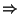
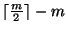
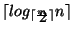

Next: Chapter 5: Hashing
Up: CS 3345: Algorithm Analysis
Previous: Chapter 3: Lists, Stacks
Trees
- collection of nodes and edges
- one root node
- zero or more subtrees
- roots of subtrees connected to root node
- parent-child relationship
- degree of a node = # of children
- internal nodes, leaf nodes
Trees
- n nodes

n-1 edges
- path length: # of edges in the path
- node depth: path length from root
- node height: max path length to a leaf
- tree height: height of root
Implementation: linked list of pointers for
children
Hierarchical File System
- tree structure
- pathname: directories traversed from top
- file: uniquely identified by pathname
file name need not be unique
Tree Traversals
- Preorder traversal:
- node first, children later
- Inorder traversal:
- consider a binary tree
- traverse left subtree
- process current node
- traverse right subtree
- Postorder traversal:
- subtrees first,
node later
Binary Trees
- at most 2 children/node
- linked list implementation: three fields
- 1.
- value
- 2.
- left child pointer
- 3.
- right child pointer
Expression Trees
- operands = leaf nodes
- operators = internal nodes
- degree of internal node = # of operands required by operator
Expression Tree Construction
Input: postfix expression
Rules
- 1.
-
read one symbol at a time
- 2.
- operand:
- create one-node tree
- push pointer onto stack
- 3.
- operator:
- pop pointers to T1 and T2
- form a new tree
- root = operator
- left child = T2, right child = T1
- push new tree's pointer onto stack
Binary Search Trees
- each node has a key
- assume distinct keys
- keys in left subtree < current node
- current node < keys in right subtree
- average depth = O(log n)
Make_Empty
/* 1*/ template <class Etype>
/* 2*/ void
/* 3*/ Binary_Search_Tree<Etype>::
/* 4*/ Make_Empty( Tree_Node<Etype> * & T)
/* 5*/ {
/* 6*/ if( T != NULL)
/* 7*/ {
/* 8*/ Make_Empty( T->Left);
/* 9*/ Make_Empty( T->Right);
/*10*/ delete T;
/*11*/ T = NULL;
/*12*/ }
/*13*/ }
Find
/* 1*/template <class Etype>
/* 2*/Tree_Node<Etype>*
/* 3*/Binary_Search_Tree<Etype>::
/* 4*/Find(const Etype &X, Tree_Node<Etype> *T)
/* 5*/{
/* 6*/ if( T == NULL)
/* 7*/ return NULL;
/* 8*/ else
/* 9*/ if( X < T->Element)
/*10*/ return Find( X, T->Left);
/*11*/ else
/*12*/ if( X > T->Element)
/*13*/ return Find( X, T->Right);
/*14*/ else
/*15*/ return T;
/*16*/}
Find_Min, FInd_Max
/* 1*/ template <class Etype>
/* 2*/ Tree_Node<Etype>*
/* 3*/ Binary_Search_Tree<Etype>::
/* 4*/ Find_Min( Tree_Node<Etype> *T) const
/* 5*/ {
/* 6*/ if( T == NULL)
/* 7*/ return NULL;
/* 8*/ else
/* 9*/ if( T->Left == NULL)
/*10*/ return T;
/*11*/ else
/*12*/ return Find_Min( T->Left);
/*13*/ }
Insert
/* 1*/template <class Etype>
/* 2*/void Binary_Search_Tree<Etype>::
/* 4*/Insert(const Etype&X, Tree_Node<Etype>*&T)
/* 5*/{
/* 6*/ if( T == NULL)
/* 7*/ {
/* 8*/ T = new Tree_Node<Etype>(X);
/* 9*/ if( T == NULL )
/*10*/ Error( "Out of space");
/*11*/ }
/*12*/ else
/*13*/ if( X < T->Element)
/*14*/ Insert( X, T->Left);
/*15*/ else
/*16*/ if( X > T->Element)
/*17*/ Insert( X, T->Right);
/*18*/ // Else X is in the tree already.
/*19*/}
Remove
- leaf node: delete immediately
- node with one child:
- adjust parent's pointer to bypass node
- delete node
- node with two children:
- replace with smallest node in right
subtree
- delete node
Balancing the Tree
- additions, deletions
create imbalance
- if insertion input presorted: insertion takes quadratic time!
- need for imposing balance
Two approaches
- 1.
- insist on balance: no node allowed to go too deep
- 2.
- forgo balance: apply restructuring rule to make future operations
efficient
Restructuring example: a sequence of m
operations take O(m log n)
time
Balancing: the battle continues
- Simplest idea:
- left and right subtrees have same height
- doesn't work all the time
- Alternative:
- for every node, left subtree height = right subtree height
- too rigid
- requires perfect balance
Need a compromise between the two
approaches
AVL Trees
- similar to binary search trees
- difference: for every node left and right subtrees can have height
difference of at most 1
- height of an AVL tree = at most 1.44 log n (approx.)
N(h): # of nodes in minimum size AVL tree of height h
N(h) = N(h-1) + N(h-2) + 1
N(0) = 1, N(1) = 2
all operations, except insertion, performed in O(log N) time
Balancing Procedure
Insertion can unbalance the tree
Restore balance by rotation
- 1.
- start at inserted node
- 2.
- travel upwards updating balance
information
- 3.
- if root reached without need for balancing: done
- 4.
- otherwise: do a rotation at first badly
balanced node encountered
- 5.
- done!
Splay Trees
- any m consecutive tree operations take
O(m log n) time
- amortized running time per tree operation = O(log n)
Basic Idea: an accessed node is pushed to the root by a series
of AVL tree rotations
Effect: if accessed node is very deep,
restructuring results in
tree balancing
Simple solution: perform single rotations
bottom up
(doesn't work!)
Reason: it may push other nodes almost as deep as the raised
node used to be
Splaying
- similar to rotations
- greater selectivity about how to rotate
Splaying Rules
- 1.
- travel bottom up along access path
- 2.
- let X be node to be rotated
- if parent(X) = root
rotate X and root
- if X has grandparent and zig zag
double rotation
like AVL
- if X has grandparent and straight path
change
orientation
Splaying: Properties
- 1.
- when access paths are long:
- longer than normal search time
- rotations tend to be good for future operations
- 2.
- when accesses are cheap: rotations not as good
B-Trees
- root: either a leaf of has 2-m children
- non-leaf, non-root nodes:

children
- all leaves at same depth
- data stored in the leaves
- intermediate nodes contain pointer to children and smallest values in
subtrees
- values in subtree p1 < values in subtree p2 < ...
- # of values in a leaf:
- depth of a B-tree:

Next: Chapter 5: Hashing
Up: CS 3345: Algorithm Analysis
Previous: Chapter 3: Lists, Stacks
Ravi Prakash
1999-11-17